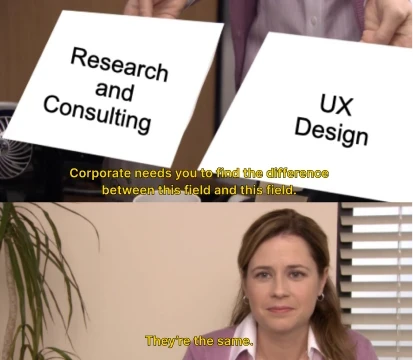
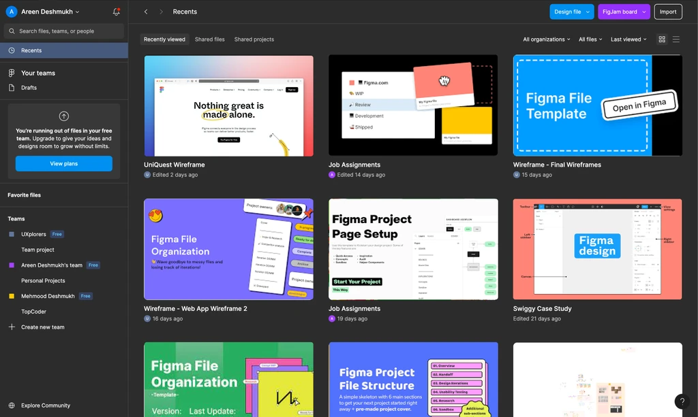

I'm Areen – a UX designer with a passion for creating digital experiences that are more than just a click(or a tap)!
My journey into the design world wasn't your typical path. With a research background, I bring a unique blend of analytical thinking and creative flair to every project.
The spark for UX ignited when I stumbled upon a women's safety app during my time in the development sector. It was a lightbulb moment that showed me the incredible impact design can have on people's lives. Since then, I've been on a mission to craft designs that not only look good but make a real difference.
I'm a firm believer that design is at its best when it's human-centric. My work sits at the crossroads of understanding people, leveraging technology, and making a positive impact. Every project is a chance to tell a story, to create something meaningful that resonates with users.
Beyond the pixels and wireframes, you'll find me in the kitchen, playing with ingredients and perfecting the art of baking. Because just like in design, it's the little details that make all the difference!
So, welcome to my corner of the web & happy exploring!
From Economics to Wireframes: A Journey into the Multifaceted World of UX DesignDecember 22, 2023 |
 |
|
Transitioning into a new field is anything but easy. One has to gain skills and learn stuff right from scratch. Well…not everything! In this blog, I attempt to connect the dots between my past experiences and my current design journey. So read ahead to see how my past shaped me as a UX Designer! |
Redesigning the Figma Home ScreenDecember 26, 2023 |
 |
|
Ever found yourself lost in the maze of Figma files? Trust me, you're not alone. The struggle is real. Better categorisation of files can improve the overall file search experience. In this blog I share my thought process behind my design decisions for improving the Figma Home Screen. |
Improve the creator’s profile screen (first fold) to ensure a visitor gets a good first impression of the creator and makes them want to engage further.
The task was to declutter Figma's home screen and reduce the confusion associated with file search.
The task was to improve the overall experience of the students of Masters' Union who use the institute's learning management system on a daily basis.
You can reach out to me at areen.dsn@gmail.com
Copyright © 2024 Areen Deshmukh